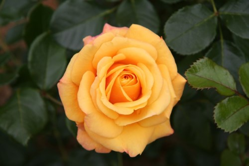
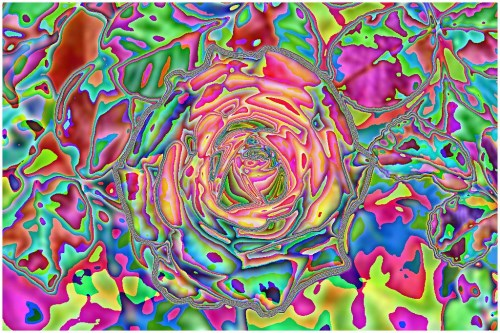

Image Colour Average
Introduction
This article’s intension is focussed on providing a discussion on the tasks involved in implementing Image Colour Averaging. Pixel colour averages are calculated from neighbouring pixels. Resulting images indicate a variety of artistic effects.
Building the Sample
There are no special requirements or instructions for building the sample source code.
Using the Sample Application
The sample source code associated with this article includes a Windows Forms based sample application. The sample application is provided with the intention of illustrating the concepts explored in this article. In addition the sample application serves as a means of testing and replicating results.
By clicking the Load Image button users are able to select input/source images from the local file system. On the right hand side of the screen various controls enable the user to control the implementation of colour averaging. The three CheckBoxes labelled Red, Green and Blue relates to whether an individual colour component is to be included in calculating colour averages.
The filter intensity can be specified through selecting a filter size from the dropdown ComboBox, specifying higher values will result in output images expressing more colour averaging intensity.
Additional image filter effects can be achieved through implementing colour component shifting/swapping. When colour components are shifted left the result will be:
- Blue is set to the original value of the Red component.
- Red is set to the original value of the Green component.
- Green is set to the original value of the Blue component.
When colour components are shifted right the result will be:
- Red is set to the original value of the Blue component
- Blue is set to the original value of the Green component
- Green is set to the original value of the Red Component
Resulting images can be saved by the user to the local file system by clicking the Save Image button. The following image is a screenshot of the Image Colour Average sample application in action:
Averaging Colours
In this article and the accompanying sample source code colour averaging is implemented on a per pixel basis. An average colour value is calculated based on a pixel’s neighbouring pixels’ colour. Determining neighbouring pixels in the sample source code has been implemented in much the same method as image convolution. The major difference to image convolution is the absence of a fixed matrix/kernel.
Additional resulting visual effects can be achieved through various options/settings implemented whilst calculating colour averages. Additional options include being able to specify which colour component averages to implement. Furthermore colour components can be swapped/shifted around.
The sample source code implements the AverageColoursFilter extension method, targeting the Bitmap class. The extent or degree to which colour averaging will be evident in resulting images can be controlled through specifying different values set to the matrixSize parameter. The matrixSize parameter in essence determines the number of neighbouring pixels involved in calculating an average colour.
The individual pixel colour components Red, Green and Blue can either be included or excluded in calculating averages. The three method boolean parameters applyBlue, applyGreen and applyRed will determine an individual colour components inclusion in averaging calculations. If a colour component is to be excluded from averaging the resulting image will instead express the original source/input image’s colour component.
The intensity of a specific colour component average can be applied to another colour component by means of swapping/shifting colour components, which is indicated through the shiftType method parameter.
The following code snippet provides the implementation of the AverageColoursFilter extension method:
public static Bitmap AverageColoursFilter(
this Bitmap sourceBitmap,
int matrixSize,
bool applyBlue = true,
bool applyGreen = true,
bool applyRed = true,
ColorShiftType shiftType =
ColorShiftType.None)
{
BitmapData sourceData =
sourceBitmap.LockBits(new Rectangle(0, 0,
sourceBitmap.Width, sourceBitmap.Height),
ImageLockMode.ReadOnly,
PixelFormat.Format32bppArgb);
byte[] pixelBuffer = new byte[sourceData.Stride *
sourceData.Height];
byte[] resultBuffer = new byte[sourceData.Stride *
sourceData.Height];
Marshal.Copy(sourceData.Scan0, pixelBuffer, 0,
pixelBuffer.Length);
sourceBitmap.UnlockBits(sourceData);
int filterOffset = (matrixSize - 1) / 2;
int calcOffset = 0;
int byteOffset = 0;
int blue = 0;
int green = 0;
int red = 0;
for (int offsetY = filterOffset; offsetY <
sourceBitmap.Height - filterOffset; offsetY++)
{
for (int offsetX = filterOffset; offsetX <
sourceBitmap.Width - filterOffset; offsetX++)
{
byteOffset = offsetY *
sourceData.Stride +
offsetX * 4;
blue = 0;
green = 0;
red = 0;
for (int filterY = -filterOffset;
filterY <= filterOffset; filterY++)
{
for (int filterX = -filterOffset;
filterX <= filterOffset; filterX++)
{
calcOffset = byteOffset +
(filterX * 4) +
(filterY * sourceData.Stride);
blue += pixelBuffer[calcOffset];
green += pixelBuffer[calcOffset + 1];
red += pixelBuffer[calcOffset + 2];
}
}
blue = blue / matrixSize;
green = green / matrixSize;
red = red / matrixSize;
if (applyBlue == false)
{
blue = pixelBuffer[byteOffset];
}
if (applyGreen == false)
{
green = pixelBuffer[byteOffset + 1];
}
if (applyRed == false)
{
red = pixelBuffer[byteOffset + 2];
}
if (shiftType == ColorShiftType.None)
{
resultBuffer[byteOffset] = (byte)blue;
resultBuffer[byteOffset + 1] = (byte)green;
resultBuffer[byteOffset + 2] = (byte)red;
resultBuffer[byteOffset + 3] = 255;
}
else if (shiftType == ColorShiftType.ShiftLeft)
{
resultBuffer[byteOffset] = (byte)green;
resultBuffer[byteOffset + 1] = (byte)red;
resultBuffer[byteOffset + 2] = (byte)blue;
resultBuffer[byteOffset + 3] = 255;
}
else if (shiftType == ColorShiftType.ShiftRight)
{
resultBuffer[byteOffset] = (byte)red;
resultBuffer[byteOffset + 1] = (byte)blue;
resultBuffer[byteOffset + 2] = (byte)green;
resultBuffer[byteOffset + 3] = 255;
}
}
}
Bitmap resultBitmap = new Bitmap(sourceBitmap.Width,
sourceBitmap.Height);
BitmapData resultData =
resultBitmap.LockBits(new Rectangle(0, 0,
resultBitmap.Width, resultBitmap.Height),
ImageLockMode.WriteOnly,
PixelFormat.Format32bppArgb);
Marshal.Copy(resultBuffer, 0, resultData.Scan0,
resultBuffer.Length);
resultBitmap.UnlockBits(resultData);
return resultBitmap;
}
public static Bitmap AverageColoursFilter( this Bitmap sourceBitmap, int matrixSize, bool applyBlue = true, bool applyGreen = true, bool applyRed = true, ColorShiftType shiftType = ColorShiftType.None) { BitmapData sourceData = sourceBitmap.LockBits(new Rectangle(0, 0, sourceBitmap.Width, sourceBitmap.Height), ImageLockMode.ReadOnly, PixelFormat.Format32bppArgb); byte[] pixelBuffer = new byte[sourceData.Stride * sourceData.Height]; byte[] resultBuffer = new byte[sourceData.Stride * sourceData.Height]; Marshal.Copy(sourceData.Scan0, pixelBuffer, 0, pixelBuffer.Length); sourceBitmap.UnlockBits(sourceData); int filterOffset = (matrixSize - 1) / 2; int calcOffset = 0; int byteOffset = 0; int blue = 0; int green = 0; int red = 0; for (int offsetY = filterOffset; offsetY < sourceBitmap.Height - filterOffset; offsetY++) { for (int offsetX = filterOffset; offsetX < sourceBitmap.Width - filterOffset; offsetX++) { byteOffset = offsetY * sourceData.Stride + offsetX * 4; blue = 0; green = 0; red = 0; for (int filterY = -filterOffset; filterY <= filterOffset; filterY++) { for (int filterX = -filterOffset; filterX <= filterOffset; filterX++) { calcOffset = byteOffset + (filterX * 4) + (filterY * sourceData.Stride); blue += pixelBuffer[calcOffset]; green += pixelBuffer[calcOffset + 1]; red += pixelBuffer[calcOffset + 2]; } } blue = blue / matrixSize; green = green / matrixSize; red = red / matrixSize; if (applyBlue == false) { blue = pixelBuffer[byteOffset]; } if (applyGreen == false) { green = pixelBuffer[byteOffset + 1]; } if (applyRed == false) { red = pixelBuffer[byteOffset + 2]; } if (shiftType == ColorShiftType.None) { resultBuffer[byteOffset] = (byte)blue; resultBuffer[byteOffset + 1] = (byte)green; resultBuffer[byteOffset + 2] = (byte)red; resultBuffer[byteOffset + 3] = 255; } else if (shiftType == ColorShiftType.ShiftLeft) { resultBuffer[byteOffset] = (byte)green; resultBuffer[byteOffset + 1] = (byte)red; resultBuffer[byteOffset + 2] = (byte)blue; resultBuffer[byteOffset + 3] = 255; } else if (shiftType == ColorShiftType.ShiftRight) { resultBuffer[byteOffset] = (byte)red; resultBuffer[byteOffset + 1] = (byte)blue; resultBuffer[byteOffset + 2] = (byte)green; resultBuffer[byteOffset + 3] = 255; } } } Bitmap resultBitmap = new Bitmap(sourceBitmap.Width, sourceBitmap.Height); BitmapData resultData = resultBitmap.LockBits(new Rectangle(0, 0, resultBitmap.Width, resultBitmap.Height), ImageLockMode.WriteOnly, PixelFormat.Format32bppArgb); Marshal.Copy(resultBuffer, 0, resultData.Scan0, resultBuffer.Length); resultBitmap.UnlockBits(resultData); return resultBitmap; }
The definition of the ColorShiftType enum:
public enum ColorShiftType
{
None,
ShiftLeft,
ShiftRight
}
public enum ColorShiftType { None, ShiftLeft, ShiftRight }
Sample Images
The original image used in generating the sample images that form part of this article, has been licensed under the Creative Commons Attribution-Share Alike 3.0 Unported, 2.5 Generic, 2.0 Generic and 1.0 Generic license. The original image can be downloaded from Wikipedia.
{kind=link}
Original Image

Colour Average Blue Size 11
Colour Average Blue Size 11 Shift Left
Colour Average Blue Size 11 Shift Right
Colour Average Green Size 11 Shift Right
Colour Average Green, Blue Size 11
Colour Average Green, Blue Size 11 Shift Left
Colour Average Green, Blue Size 11 Shift Right
Colour Average Red Size 11
Colour Average Red Size 11 Shift Left
Colour Average Red, Blue Size 11
Colour Average Red, Blue Size 11 Shift Left
Colour Average Red, Green Size 11
Colour Average Red, Green Size 11 Shift Left
Colour Average Red, Green Size 11 Shift Right
Colour Average Red, Green, Blue Size 11

Colour Average Red, Green, Blue Size 11 Shift Left
Colour Average Red, Green, Blue Size 11 Shift Right

Source Code Files
- ExtBitmap.cs - Contains the definition of the AverageColoursFilter extension method.
- MainForm.cs - Windows Forms based sample application.
More Information
This article is based on an article originally posted on my blog: http://softwarebydefault.com/2013/05/18/image-colour-average/ If you have any questions/comments please feel free to make use of the Q&A section on this page, also please remember to rate this article.